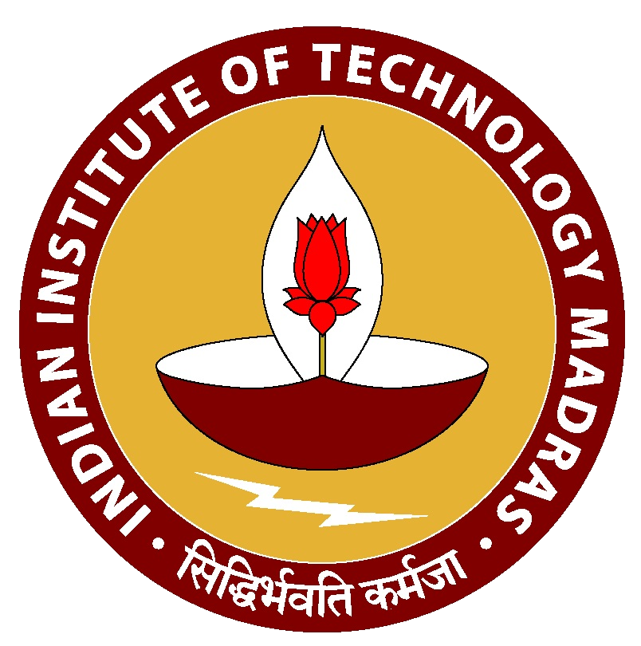
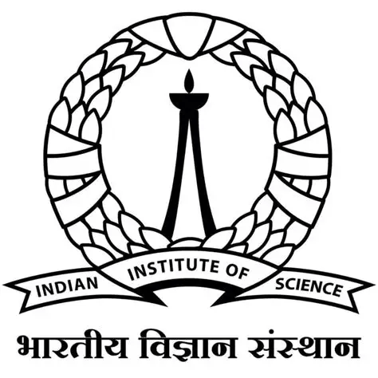
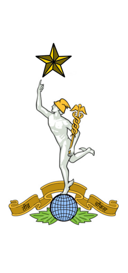

Research Associate
IIT Madras, India
Experience

IIT Madras, India
IIT Madras, India
IMC University of Applied Sciences, Austria
IIT Madras, India

Indian Institute of Science, India
NIT Jalandhar, India

Signal Corps — Indian Army